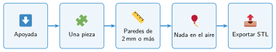
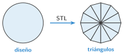

Diseñar una pieza útil y exportarla
🤔 Pienso5 min
Qué hago aquí: Piensa un momento y contesta con lo que ya sabes. No pasa nada si no lo sabes: es para empezar.
Busca tu boceto del soporte para el móvil. ¿Tiene todas las medidas? Si no lo tienes, hazlo ahora.
📖 Leo y aprendo10 min
Qué hago aquí: Lee despacio, mira los dibujos y los ejemplos, y quédate con la idea clave del final.
No todo lo que diseñas se puede imprimir bien. Antes de terminar, revisa tu pieza.
Para imprimir, sacas el diseño de Tinkercad en un archivo STL. Ese archivo guarda la forma de la pieza con muchos triángulos pequeños.


✏️ Hago30 min
Qué hago aquí: Haz las actividades en orden. Empieza siempre por las básicas.
Diseña en Tinkercad el soporte para el móvil. Sigue tu boceto.
Revisa tu soporte. Marca lo que cumple:
Apoyado Una sola pieza Paredes de más de 2 mm Nada en el aire
Exporta el soporte en STL con un buen nombre. Entrégalo en la plataforma.
¿Qué has tenido que cambiar en tu diseño para que se pueda imprimir?
✏️ Puedes responder escribiendo, con un dibujo o un esquema, o contándolo en voz alta.
🚀 Amplío (si quieres saber más)
Qué hago aquí: ¿Has terminado? Lee la curiosidad o elige el reto. Es voluntario.
Mejora tu soporte: añade un agujero para el cable del cargador o tu nombre en la base.
✅ Compruebo5 min
Qué hago aquí: Contesta sin mirar la ficha y marca cómo lo llevas.